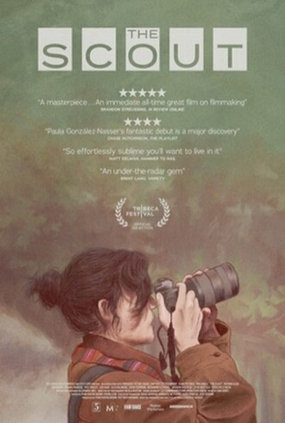

The Scout
From the festival
Working in film production sounds glamorous but often isn’t, a truth Paula González-Nasser explores in her absorbing directorial debut. This incisive, grounded feature follows Sofia (Mimi Davila), an exhausted and underappreciated location scout working in New York City. Inundated by voicemails, parking tickets, and demands from producers, Sofia struggles to find artistic validation in the monotony of her below-the-line role. Although The Scout is tinged with an everyday sort of melancholy, it’s also a striking character study. Each location Sofia visits throughout the day is a vignette that opens a window into the life of the film’s protagonist as well as those of the people she meets. Rooted in González-Nasser’s own experiences working on shows like Difficult People and Mrs. Fletcher , The Scout boasts gorgeous cinematography and an impressively lived-in feel that makes this nuanced, observational debut a perfect ode to filmmaking—both the lonely and beautiful parts. —Kate Bove
- Directed by
- Paula González-Nasser
- Country
- USA
- Year
- 2024
- Running time
- 89 minutes
- Language
- English
- Premiere
- Californa Premiere
- Guests
- Paula González-Nasser Writer, Director, Producer, Lily Cunningham Perini Sound Designer (Oct. 5 screening only)
Source: Festival website programme (MVFF48): Wayback Machine copy; Festival film page: Wayback Machine copy; Poster from Wikipedia